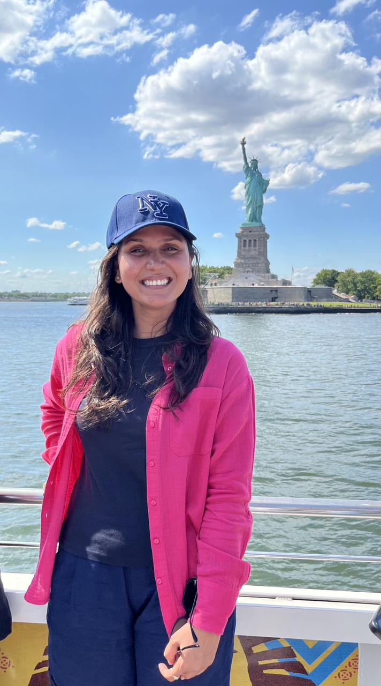
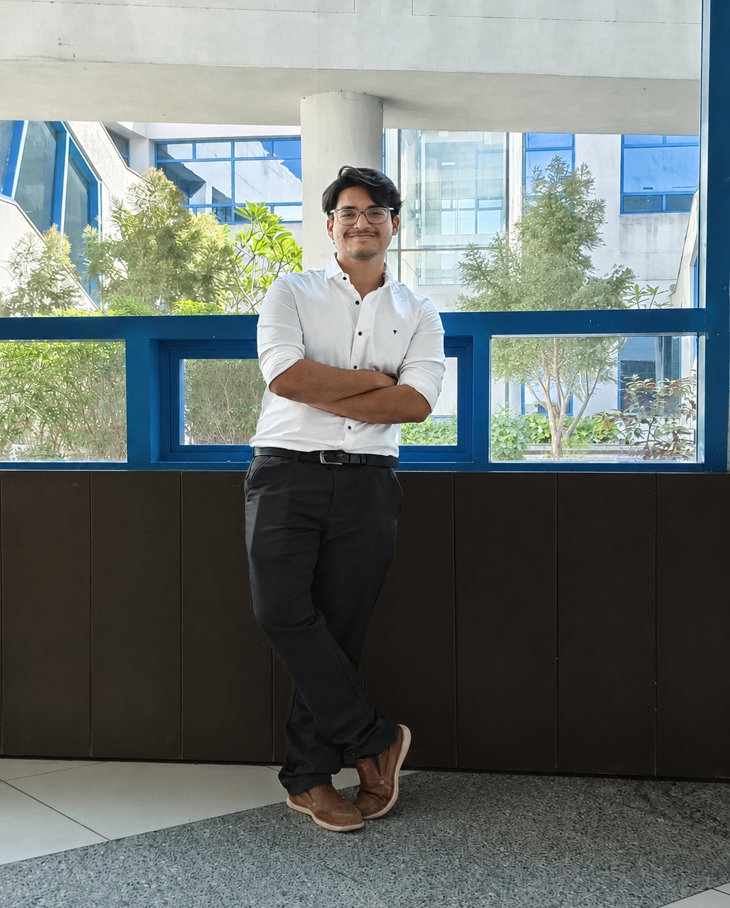
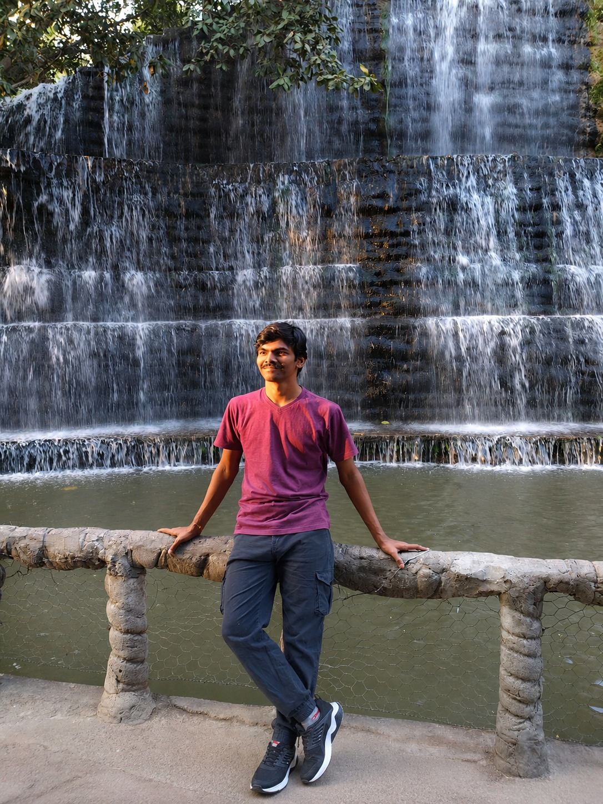

Group Alumni
Our group takes immense pride in the achievements of our past members. Below are the scholars who have successfully graduated from our lab and moved forward to impactful positions worldwide.
Ph.D. Alumni
Dr. Apoorv Kushwaha
Ph.D. (February 2021 – March 2026)
Thesis: Interstellar Collisional Dynamics: Automation and Machine Learning in Non-Reactive Scattering Simulations
Postdoc at FZU - Institute of Physics of the Czech Academy of Sciences

Dr. Pooja Chahal
Ph.D. (January 2022 – March 2026)
Thesis: Elecronic Structure Calculations and Scattering Dynamics of Detected Interstellar Species with He and H2
Post-Doc in Univ. of Hawaii, USA
M.Sc. Alumni

Rohan Sharma
M.Sc. Project Student (2025 - 2026)
Project: --
Current Status: --

Thakor Shivrajsinh Javansinh
M.Sc. Project Student (2025 - 2026)
Project: --
Current Status: --

Shivani Sagar
M.Sc. Project Student (2024 - 2025)
Project: --
Current Status: --